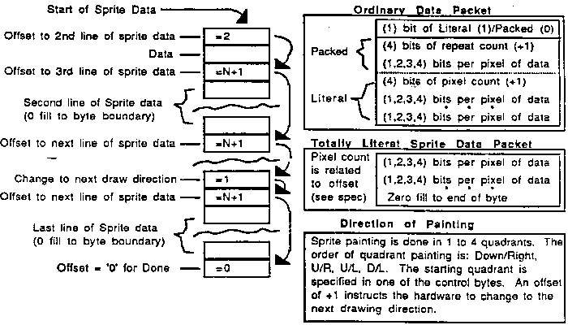

This system has a 'sprite' engine that paints pixel information into a bit mapped
screen. While the hardware does not actually manipulate individual sprites, the
software 'sees' the hardware as a sprite system. The software may also directly read
or write the bit mapped screen. While sprites are being painted, each pixel can be
checked for collision with a previously painted sprite.
- General Sprite Features
In addition to the normal teatures that accompany sprites, two major features are
present in this system. One is that all sprites are sized in real time by the hardware
prior to being painted to the screen. The other is that the data used to represent a
sprite image is stored in RAM in a compacted format.
Feature List:
- Sprites have unlimited vertical size.
- A sprites horizontal size is limited by a maximum of 254 bytes of source data. This
is approximately 508 pixels unscaled.
- Sprites have 1, 2, 3, or 4 bits per pixel of 'pen index number'. Pen index is
converted to pen number by the contents of a 16 nybble (8 byte) pen index palette
specific to each sprite.
- The horizontal and vertical reference point of a sprite can be defined to be any pixel
within that sprite at the time the programmer performs the compaction of the original
image. The starting quadrant must also be specified at that time. The reference point
is not dynamically changeable at run time, but the starting quadrant is. Note that there
wiil be a positional alteration if the starting quadrant is changed. The sprite image is
then painted in each of the 4 quadrants from that reference point. This allows sized
sprites to be referenced to their related objects (trees to the ground, doors to walls,
etc.).
- The processing of an actual sprite can be 'skipped' on a sprite by sprite
basis.
- Sprites or portions of sprites that are positioned off-screen will be clipped by the
hardware during the painting process.
- Sprites can be horizontally and/or vertically flipped. The pivot point is the sprite's
reference point.
- Sprites are sized as they are painted. They can be reduced or enlarged. Horizontal
and vertical sizing rates are independent.
- Sprite source data is unpacked as the sprite is painted. For the purpose of allowing
for simple modification of sprite data (text, scores, etc.) the packing/unpacking
algorithm allows for literal images
The literal definition does not affect sizing.
- As a sprite is painted, the collision buffer (topographically identical to the display
buffer) is checked for the existence of a previously painted sprite. If one exists, a
collision has occurred. This collision information is saved by the hardware for later
interrogation by the software. Several specific functions are performed by the
hardware on the collision data so as to make it usable by the software. They are
described elsewhere. The software may elect to not have a collision buffer and thus
have an additional BK bytes of RAM for the game. Sprites may be individually defined
as non-colliding and thvs reduce painting time.
- The horizontal size of a sprite can be modified every time a scan line is
processed. This allows for 'stretching' a sprite and in conjunction with 'tilt' can be
useful in creating arbitrary polygons.
- The horizontal position of a sprite can be modified every time a scan line is
processed. This allows for 'tilting' a sprite and in conjunction with 'stretch' can be
useful in creating arbitrary polygons.
- The vertical size of a sprite can be modified every time a scan line is processed.
This allows for 'stretching' a sprite vertically. The vertical stretch factor is the same as
the horizontal stretch factor. Vertical stretching can be enab1ed on a sprite by sprite
basis.
- Specific Sprite Functionality
- Pen Number Functions
The pen numbers range from '0' to 'F. Pen numbers '1' thru 'D' are always collideable
and opaque. They are the 13 generally usable pens for ordinary imagery. There are 8
types of sprites, each has different characteristics relating to some or all of their pen
numbers.
- Normal Sprites
A sprite may be set to 'normal'. This means that pen number '0' will be transparent
and non-collideable. All other pens will be opaque and collideable. This is the sprite
that is used for most 'action' images, weapons, enemies, obstacles, etc.
- Boundary Sprites
A sprite may be set to 'boundary'. This is a 'normal' sprite with the exception that pen
number 'P is transparent (and still collideable). This allows for a 'boundary' at which a
collision can occur without actual penetration (as in a ball bouncing off of a wall).
- Shadow Sprites
A sprite may be set to 'shadow'. This is a 'normal' sprite with the exception that pen
number 'E' is non-collideable (but still opaque). This atlows for a non-colliding shadow
on a sprite that is collideable (as in the shadow of a tree).
- Boundary-Shadow Sprites
This sprite is a 'normal' sprite with the characteristics of both 'boundary' and 'shadow'.
That is, pen number 'P is transparent (and still collideable) and pen number 'E' is non-
collideable (but still opaque).
- Background-Shadow Sprites
A sprite may be set to 'background'. This sprite wiII overwrite the contents of the video
and collision buffers. Pens '0' and 'F' are no longer transparent. This sprite is used to
initialize the buffers at the start of a 'painting'. Since the buffers are not read before
being written to, the painting process for this sprite will take approximately 1/4 less
time. Additionally, no collision detection is done, and no write to the collision depository
occurs.
There is no automatic clear of the video or collision buffers. If initialization is required,
then it should be done using 'background' sprites. Note that partially used bytes (only
one pixel) at either end of the line of pixels will do a read-modify-write cycle for that
byte. The un-used pixel will remain unchanged.
BIG NOTE!!!
The 'E' error will cause the pen number 'E' to be non-collideable and therefore not
clear the collision buffer. If you use a background sprite to clear the collision buffer, be
aware that 'E' will not clear its respective pixel.
- Background Non-Colliding Sprites
This is a 'background' sprite with the exception that no activity occurs in the collision
buffer. This sprite will require 1/3 less time to paint than a normal background sprite.
- Non-Collideable Sprites
A sprite may be set 1o 'non-collideable'. This means that it will have no affect on the
contents of the collision buffer and all other collision activities are overridden (pen 'F' is
not coIlideable). Since the collision buffer is not touched, the painting process for this
sprite will take approximately 1/4 less time. This sprite can be used for 'non-action'
images such as clouds, cockpits, scoreboards, etc.
- Exclusive-Or Sprites
This is a 'normal' sprite with the exception that the data from the video buffer is
exclusive-ored with the sprite data and written back out to the video buffer. Collision
activity is 'normal'. Since a read-modify-write cycle is required for each video byte, this
sprite could take up to 1/4 longer to paint than a 'normal' sprite.
BIG NOTE!!!
The 'E' error will cause the pen number 'E' to be non-collideable and therefore not
react with the collision buffer. If you use an exclusive or sprite, be aware that 'E' will
not collide with its respective pixel.
- Hardware details of Sprite Types
The sprite types relate to specific hardware functions according to the following table:
Shadow-------------------------------|
Boundary-Shadow--------------------| |
Normal---------------------------| | |
Boundary-----------------------| | | |
Background-Shadow------------| | | | |
Background-No Collision----| | | | | |
Non-Collideable----------| | | | | | |
Exclusive-or-Shadow----| | | | | | | |
| | | | | | | |
1 1 1 1 0 1 0 1 F is opaque
0 0 0 0 1 1 0 0 E is collideable
0 0 1 1 0 0 0 0 0 is opaque and collideable
1 0 0 0 1 1 1 1 allow collision detect
1 0 0 1 1 1 1 1 allow coll. buffer access
1 0 0 0 0 0 0 0 exclusive-or the data
Shadow Error
The hardware is missing an inverter in the 'shadow' generator. This causes sprite
types that did not invoke shadow to now invoke it and vice versa. The only actual
functionaiity loss is that 'exclusive or' sprites and 'background' sprites will have
shadow enabled. The above table shows the NEW truth.
- Byte Boundary Conditions
Bytes will contain more than one pixel, some of those pixels may be transparent,
some sprites may be non-aligned background types, and some pen numbers may be
transparent. Rather than explain how to handle all of the variations of those conditions,
I decided to make the hardware handle it automatically. Therefore, when using the
sprite engine to paint to the screen, there are no special conditions relating to screen
byte boundaries.
- Horizontal Stretch
The horizontal size of a sprite can be modified every time a destination scan line of
that sprite is processed. This includes scan line processing while the actual sprite is
off screen. The modification consists of adding the 16 bit stretch value ('STRETCH')
to the 16 bit size value ('HSIZE') at the end of the processing of a scan line. If the
stretch value was 0, no effective modification occurs. This moditication only takes
place if enabled by the rehad bits in SPRCTL1. Since the STRETCH 16 bit value
consists of 8 bits of size and 8 bits of fraction, the stretch increment can be as small
as 1/256 of a unit size and as large as 128 unit sizes. A STRETCH value of >128 unit
sizes wiil cause a wrap in the ALU and result in a size reduction.
- Vertical Stretch
The vertical size of a sprite can be modified every time a destination scan line of that
sprite is processed. The specifics are the same as those for horizontal stretching.
The value used is also the same as that used for horizontal stretching. Vertical stretch
can be independently enabled or disabled. Even though the stretch factor is added at
each destination line processing, the new vertical size only takes effect at the next
source line fetch.
- T i I t
The horizontal position of a sprite will be modified every time a scan line of that sprite
is processed. This includes scan line processing while the actual sprite is off screen.
The modification consists of 2 steps. The first is to get the 8 bit integer tilt value by
adding the 16 bit tilt value ('TILT') to the tilt accumulator ('TILTACUM') at the end of the
processing of a scan line, and shifting the answer to put the upper 8 bits in the lower
position. The second is to add that integer to the horizontal position of the sprite
('HPOSSTRT'). This modification only takes place if enabled by the reload bits in
SPRCTL1. The increments and negativeness are the same as for the stretch bit.
Positive values of tilt will cause a tilt to the right. If the sprite is painting to the left (either
due to flip or quadrant), then the software will have to set a negative tilt value if left tilt is
desired.
- Skip Sprite
The processing of a particular sprite can be mostty skipped. The only activity that will
occur is the reading of the first 5 bytes of the SCB. It is required that those 5 bytes be
legitimate, they will be loaded into the hardware. Note that the last 2 by1es are the
address of the next SCB.
- Horizontal and Vertical Size Offset
In order to balance the visual 'bump' that occurs at the reference point of a multi-
quadrant sized sprite, we implemented a 'cheat' value of initial offset for both
horizontal and vertical size. They are programmed independently at the time of sprite
engine initialization. For horizontal, the left direction offset is forced to zero, and the
right direction offset is programmed to 007F. For vertical, the up direction offset is
forced to zero, and the down direction offset is programmed to 007F.
When using specific sizes to achieve specific effects, these offsets must be taken into
account. You may also program them to any 16 bit value you desire. They are
common to all sprites, so remember to set them back if you want the usual offset
correction.
- Collision Description
Sprites have a 4 bit collision number associated with them. The range of this collision
value is 0->15. This number is the lower 4 bits of the 3rd byte in the SCB, 'SPRCOLL'.
One of the upper 4 bits is used by the hardware to disable collision activity for this
sprite. The other 3 are currently ignored by the hardware, but ought to be set to '0' for
future compatibility. The software must assign this collision number for each use of
each sprite. The rules for assignment are discussed in a software document.
There is a collision buffer that is topographically identical to the video buffer. The
number in each 'cell' of the collision buffer is the collision number of the sprite whose
video pixel is in the corresponding 'cell' of the video buffer. A value of '0' means that
there is no collideable object in this pixel (although there may be a visible image). Any
other number is the collision number ot the last object that was painted into that pixel.
This buffer is written to by the sprite painting process. All hardware collision detection
is done with the data in the collision buffer, not the data in the video buffer. This has
obvious advantages and will be explained at seminars and in newsletters forever.
At the completion of the processing of each collideable sprite, the hardware writes a
byte into the 'collision depository' of that sprites SCB. The contents of that byte are the
result of the collision process described below. After all of the sprites are painted,
each of them will have a relevant number in their collision depository. These numbers
can later be read by the CPU for sprite collision detection.
In addition, the software can either do its own collision detection, or use the contents
of the collision buffer for some weird collision detection algorithm. In either event, l will
be mortally offended.
- Collision Process
During sprite painting to the video buffer, a collision process also takes place. Note
that the collision process does NOT occur when the CPU directly accesses the video
buffer. The collision process is also disabled by the appropriate selection of 'sprite
type' or the setting of any of the other collision disable bits. If the sprite is 'collideable',
the hardware will write to the collision depository each time the sprite is painted,
relieving the software from having to clear the byte after collision detection. If the sprite
is not 'collideable', the hardware will not write to the collision depository, and the
software may wish to initialize the byte to a 'safe' value. 'Everon' also causes writing to
the collision depository.
At the start of painting a particular sprite, a hardware register called fred is cleared to
0. In the course of painting this particular sprite, as each pixel is painted, the
corresponding 'cell' in the collision buffer is read (actually done in bursts of 8 pixels). If
the number read from the collision buffer cell is larger than the number currently in
fred, then this larger number will be stored in fred. At the end of the processing of this
particular sprite, the number in fred will be written out to the collision depository. If
more than one collideabte object was hit, the number in fred will be the HIGHEST of all
of the collision numbers detected.
If a particular sprites collision depository value is zero, then this particular sprite did
not collide with any other collideable object while it was being painted to the video
buffer. This does not mean that this sprite will not be in collision with some other
object that is painted later, or that it is not in visual collision with any object, it only
means that the collideable pixels of this sprite did not overlay any collideable pixels
ALREADY in the collision buffer. If, later on, a sprite is painted that collides with this
sprite, then that later sprite will register the collision.
If a particular sprites collision depository value is non-zero, then this particular sprite
collided with a collideable object that ALREADY existed in the collision buffer. The
number found in the collision depository is the collision number of the object that was
hit. It is hoped that ihe software will assign collision numbers in a meaningful fashion.
My guess at a meaningful assignment is that the numbers will be assigned in visual
depth order so that hardware detected collisions will be representative of visually
noticed collisions.
- Anti-Collision Devices
In response to popular demand, hardware collision is disableable in many ways.
- The original method of declaring a sprite to be of type
'non-collideable'.
- Set the 'don't collide' bit in the sprite collision number 'SPRCOLL'- of the
SCB.
- Set the 'don't collide' bit in the system control byte 'SPRSYS'.
These bits override all other collision settings, and will disable all collision activity for
either the current sprite (when set in 'SPRCOLL') or for all sprites (when set in
'SPRSYS').
- Sprite Data Structure
Sprite data consists ot a sprite control block (SCB) and a sprite data block. The SCBs
are linked by pointers in 'Painters Order'. Each SCB also points to the sprite data
block containing the image of interest. Many SCBs may point to one sprite data block.
Each occurrence of a sprite on the screen requires 1 SCB. Since all of the SCBs and
sprite data blocks are accessed by pointers, they may be located anywhere in RAM
space. Neither SCBs nor sprite data may be located in Mikey ROM.
- Sprite Control Block
Each SCB contains certain elements in a certain order as required by the hardware. In
addition, elements may be added by the software as desired. The hardware will not be
aware of, nor be affected by, these additional elements.
This list shows the identification and order ot the required elements and some
possible additional elements.
SCB in RAM(Linked in Painters Order)
Number of bytes -| |------ First Element in list
| |
V V
(1) 8 bits of control (SPRCTLO)
(1) 8 bits of control (SCBCTL1)
(1) 4 bits of control (SPRCOLL)
(2) 16 bits of pointer to next sprite SCB (0 last SCB)
(2) 16 bits of address of start of Sprite Data
(2) 16 bits ot starting H Pos
(2) 16 bits of starting V Pos
(2) 16 bits of H size bits
(2) 16 bits of V size bits
(2) 16 bits of stretch value
(2) 16 bits of tilt value
(8) 64 bits of pen palette
The position of this
element is arbitrary (1) 4 bits of collision depository
but must be fixed in
any particular game
These are some (1) 8 bits of Identification Number
possible additional (1) 8 bits of Z depth
elements in the SCB. (2) 16 bits of pointer to previous sprite SCB (0 = first SCB)
These and any others
will be ignored by the
hardware.
The 8 bytes of pen palette are treated by the hardware as a separate block of data
from the previous group of bytes in the SCB. This means that the reloadability of some
of the previous bytes does not affect the reusability ot the pen palette. In additioo, this
means that when some of the bytes are not reloaded, the length of the SCB will be
smaller by the number of bytes not used. If I have said this in a confusing manner,
then I have.
- Data Packing Format
All sprite data is formatted. The format consists of offsets and actual image data. The
image data can be totally packed, a combination of packed and literal, and totally
literal. The format is shown below:

Well, I finally found the bug that required a pad byte of 0 at the end of each scan line of
data. But, It is actually 2 bugs. I have fixed one of them, but the other requires an
extensive change. Too bad, I am out of time. Therefore:
There is a bug in the hardware that requires that the last meaningful bit of the data
packet at the end of a scan line does not occur in the last bit of a byte (bit 0). This
means that the data packet creation process must check for this case, and if found,
must pad this data packet with a byte of all Os. Don't forget to adjust the offset to
include this pad byte. Since this will only happen in 1/8 of the scan lines, it is not
enough overhead to force me to try to fix the bug. Sorry.
A data Packet header of '00000' is used as an additional detector of the end of the line
of sprite data. This is normally used as the tiller in the last byte of a line of data, but it
can be located anywhere in the data line, not just the last byte. Note that this would
ordinarily decode to a packed packet of 1 pixel. Please use a literal packet of 1 pixel
when the imagery calls for such an event. In addition, this special header is used
when a scan line with no pixels is desired. You must use an offset of 2 with a data
byte of all 0, since an offset of 1 will cause a change of painting direction.
oops, may have a bug, more later on the truth of '00000'
In a totally literal sprite, there is no pixel count. Source data is converted to pixels until
it runs out of bytes in that line of sprite data. The odd bits that may be left over at the
end ot the last byte will be painted. The special data packet of '00000' is not
recc:.,nized in a totally literal sprite.
- Bits in Bytes
In the display buffer, there will be 2 pixels in a byte of data. When painting the data to
the right on an un-flipped screen, the pixel in the most significant bits will be painted
first, and therefore on the left side of the line. The completed bytes will be painted in
ascending order of byte address.
The picture is:
LEFT RIGHT
address 0 address 1 address 2
pix0 pix1 pix2 pix3 pix4 pix5
Bits 7654 3210 7654 3210 7654 3210
This order also applies to the pen index palette in the SCB. The pen number
referenced by PIN 0 (Pen index Number) is in the UPPER nybble of the '01' byte.
- Sprite Engine Description
The sprite engine consists of severai 8 bit control registers, a 16 bit wide sprite control
block register set and ALU, an address manipulator, an 8 byte deep source data FIFO,
a 12 bit shift register for unpacking the data, a 16 nybble pen index palette, a pixel byte
builder, an 8 word deep pixel data FlFO, a data merger, and assorted control logic.
The basic flow is:
- The address manipulator gets the address ot the source data, gets chunks of 4
bytes for the data FIFO, and appropriately increments the address.
- The unpacker logic pulls data from the FIFO, serializes it in the shift register, and
forms it into individuai pen index numbers.
- The pen index number is fed to the pen index palette which produces a 4 bit pen
number,
- The 4 bit pen numbers go to the pixel byte builder where their transparency and
collideability are noted, they are combined into bytes, and pfaced in the pixel data
FIFO.
- The pixel data is then merged with existing RAM data in the video buffer (using
read-modify-write cycles in the RAM) based on transparency and other control bits. 6.
The collideability data is then used to perform the collision process with the collision
buffer.
All of the operations are pipe-tined and operate in an interleaved fashion that reduces
bottlenecks and results in almost the highest system performance possible.
- Sprite Engine Use
In order to correctly use the sprite engine, 3 things must be done. First, the CPU must
initialize certain registers within the engine. Second, appropriately formatted sprite
control blocks (in RAM) must be created, and they must point to correctly formatted
sprite data blocks. Third, the sprite engine must be started by the GPU. The start bit is
described in the hardware address appendix. The formats of sprite control blocks and
sprite data blocks are described in this document. The required initialization is
described here. A condensed 'cheat-sheet' can be created later.
- Sprite Engine Initialization
Certain registers must be initialized in the sprite engine after power up. It was not done
in hardware for two reasons. First is that the engine is useful for other tasks besides
painting sprites; hardware divide, hardware multiply, etc. Second is that it would have
been too expensive in silicon to perform the initializations on the style of register array
used.
The initialization for the purpose of painting sprites is listed below. The order that the
registers are initialized is not important as long as ALL of them are initialized to a
legitimate value before the sprite engine is turned on.
All of these values can be changed during the course of operation as long as all of
them remain legitimate.
Initiatization steps for sprite painting:
- Load the appropriate value into the system control register (SPRSYS).
- Write the correct value into (SPRINIT).
- Write the horizontal pixel offset from zero to the left edge of the screen into HOFF.
- Write the vertical pixel offset from zero to the top edge of the screen into VOFF.
- Write the base address of the collision buffer into COLLBASE.
- Write the value of the offset between the collision depository location in a RAM
sprite control block and the location of the first byte of a RAM sprite control block into
COLLOFF.
- Write the magic numbers into (HSIZOFF) and (VSIZOFF).
- Write a '01' to SUZYBUSEN, giving Suzy permission to access the bus.
When you are ready to start the sprite engine, the following steps are required:
- Write the base address of the video build buffer into VlDBASE.
- Write the address of the start of the first RAM sprite control block into SCBNEXT.
- Write a '01' (or '05') to SPRGO, turning on the sprite engine.
- Write a '00' to SDONEACK, allowing Mikey to respond to sleep commands.
- Put the CPU to sleep, allowing Suzy to actually get the bus.
Writing a 01 or 05 to SPRGO sets the 'SPRlTESEN' flip flop which causes the sprite
engine to start its operation. When the engine finishes processing the sprite list, or if it
has been requested to stop at the end of the current sprite, or if it has been forced off
by writing a 00 to SPRGO, the SPRlTESEN flip flop will be reset. This engine starts
only from its beginning. It can not be stopped and
restarted from its stopped point. Stopping the engine does not affect the contents of
any of the other registers.
SUZYBUSEN contains the bit that allows Suzys access to the bus. It does not affect
the internal operation of the sprite engine until such time that the sprite engine needs
the RAM bus. Then the engine will wait until it gets the bus before continuing its
processing. It is suspected that in ordinary sprite engine use, this bit will be set once
and then left on. This bit can be used to pause the sprite engine. The 'unsafe' condition
of the internal registers is not directly affected by this bit.
I need to think about how to use it.
TOP
[BACK|CONTENTS|NEXT]
HOME
(c) Bastian
Schick
last modified 1996/12/12